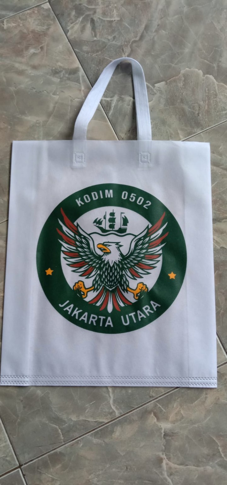
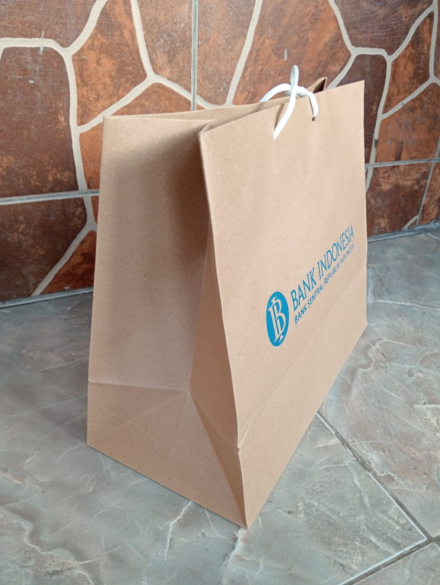

Harga bersahabat
Solusi custom yang dapat disesuaikan dengan kebutuhan dan anggaran.
CUSTOM BAG SPECIALIST
Goodiebag, tas belanja spunbond, dan paperbag custom untuk acara, komunitas, maupun kebutuhan bisnis Anda.
Custom sesuai kebutuhan
Desain, warna, dan jumlah fleksibel

SpunBrand adalah UMKM yang bergerak di bidang jasa sablon dan pembuatan tas custom. Kami membantu pelanggan menghadirkan tas yang fungsional sekaligus membawa identitas usaha, komunitas, maupun acara.
Berawal dari ketertarikan pada dunia sablon dan kebutuhan kemasan yang berkualitas dengan harga terjangkau, SpunBrand hadir dengan pelayanan yang komunikatif dan hasil yang diperhatikan.
Diskusikan kebutuhan Anda →Solusi custom yang dapat disesuaikan dengan kebutuhan dan anggaran.
Memperhatikan kerapian sablon, bahan, dan hasil akhir produk.
Komunikasi jelas dari konsultasi hingga pesanan selesai.
Temukan pilihan tas custom untuk membawa pesan dan identitas brand Anda.
Cocok untuk seminar, acara, komunitas, dan promosi.

Tampilan natural dan profesional untuk kemasan produk atau souvenir.
Tas pakai ulang untuk toko, retail, dan kebutuhan harian.
*Harga mulai dan dapat berubah sesuai ukuran, bahan, jumlah pesanan, serta desain sablon. Hubungi kami untuk penawaran yang sesuai.
Contoh produk custom yang dapat menjadi inspirasi untuk pesanan Anda.
Setiap pesanan punya cerita. Kami bantu menghadirkannya melalui kemasan yang tepat.
SPUNBRAND · CUSTOM PRINTINGCeritakan kebutuhan tas custom Anda. Kami siap membantu memberikan informasi dan penawaran.
Hubungi via WhatsApp ↗Cogrek City, Tangerang,
Banten
Setiap hari · 08.00–17.00 WIB